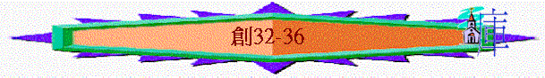

|
太 古 歷 史 ( 1 – 11：9 ) |
先 祖 歷 史 ( 1 1：1 0 –5 0 ) |
||||||
|
創造篇 |
墮落篇 |
洪水篇 |
巴別篇 |
亞伯拉罕篇 |
以撒篇 |
雅各篇 |
約瑟篇 |
三.雅各----更新的生命(27-36)
1.人的方法(27-31)
2.神的扭轉(32-36)
A.遇見使者----謙卑求救
a.神兵的遇見
「雅各仍舊行路，神的使者遇見他。雅各看見他們就說、這是 神的軍兵．於是給那地方起名叫瑪哈念。〔就是二軍兵的意思〕」32:1-2
～瑪哈念意思就是二軍營或二軍兵，雅各遇見二隊天軍
～他可能會聯想以下事
(1)伯特利天梯的經歷
～在天梯中也提及神的使者
(2)伯特利真神的應許
～神應許他可以返回此地
(3)瑪哈念天軍的同在
～今日他要返回家鄉，他不是孤單無望的，有神的天軍保護
b.自己的謀算
(1)打聽以掃的情況
「雅各打發人先往西珥地去，就是以東地，見他哥哥以掃，」32:3
「所打發的人回到雅各那裡，說：「我們到了你哥哥以掃那裡，他帶著四百人，正迎著你來。」」32:6
～西珥在死海南部
(2)內心產生的恐懼
「雅各就甚懼怕，而且愁煩，便把那與他同在的人口和羊群、牛群、駱駝分做兩隊，」32:7
(3)分作兩隊的籌算
「說：「以掃若來擊殺這一隊，剩下的那一隊還可以逃避。」」32:8
c.謙卑的求救
「雅各說：「耶和華我祖亞伯拉罕的神，我父親以撒的神啊，你曾對我說：『回你本地本族去，我要厚待你。』你向僕人所施的一切慈愛和誠實，我一點也不配得；我先前只拿著我的杖過這約但河，如今我卻成了兩隊了。求你救我脫離我哥哥以掃的手；因為我怕他來殺我，連妻子帶兒女一同殺了。」32:9-11
～這是第一次雅各認真謙卑的求神拯救，在伯特利的經歷中，他仍沒有自卑尋求神，他只是向神許願(甚至交易)，今次他看到自己的不配，求神的拯救
B.與神較力----以神為神
a.禮物預備
「當夜，雅各在那裡住宿，就從他所有的物中拿禮物要送給他哥哥以掃：母山羊二百隻，公山羊二十隻，母綿羊二百隻，公綿羊二十隻，」32:13-14
「又吩咐第二、第三，和一切趕群畜的人說：「你們遇見以掃的時候也要這樣對他說；並且你們要說：『你僕人雅各在我們後邊。』」因雅各心裡說：「我藉著在我前頭去的禮物解他的恨，然後再見他的面，或者他容納我。」」32:19-20
b.獨自面對
「他夜間起來，帶著兩個妻子，兩個使女，並十一個兒子，都過了雅博渡口，先打發他們過河，又打發所有的都過去，」32:22-23
～雅博渡口位於約但河東的分支
c.較力經歷
(1)神將雅各推到最高峰之地
「先打發他們過河，又打發所有的都過去，只剩下雅各一人。有一個人來和他摔跤，直到黎明。那人見自己勝不過他，就將他的大腿窩摸了一把，雅各的大腿窩正在摔跤的時候就扭了。」32:23-25
「他在腹中抓住哥哥的腳跟，壯年的時候與神較力，與天使較力，並且得勝，哭泣懇求，在伯特利遇見耶和華。耶和華萬軍之神在那裡曉諭我們以色列人；耶和華是他可記念的名。」何12:3-5
～雅各遇到天使(也代表神)，天使與他較力，結果他在壯年時候與人與神較力都得勝；與人較力可能代表雅各用詭計勝過以掃及拉班
(2)神將雅各推到最軟弱之處
「那人見自己勝不過他，就將他的大腿窩摸了一把，雅各的大腿窩正在摔跤的時候就扭了。」32:25
「日頭剛出來的時候，雅各經過毗努伊勒，他的大腿就瘸了。故此，以色列人不吃大腿窩的筋，直到今日，因為那人摸了雅各大腿窩的筋。」32:31-32
～雅各面對以掃最後的方法就是用腳逃走，但天使卻在雅各的大腿窩摸了一把，他就扭了，他最後的倚靠也沒用了！
～可能此時雅各也發現那人是從神來的，但雅各再沒有能力在較力上勝那人
d.更新改變
(1)態度改變
「與天使較力，並且得勝，哭泣懇求，在伯特利遇見耶和華。耶和華萬軍之神在那裡曉諭我們以色列人；耶和華是他可記念的名。」何12:4-5
「那人說：「天黎明了，容我去吧！」雅各說：「你不給我祝福，我就不容你去。」」創32:66
～他由與人及與天使較力的態度，改變至哭泣懇求神的祝福與保守，他看到己自的無能與軟弱，真正要懇求神
(2)名字改變
「那人說：「你名叫什麼？」他說：「我名叫雅各。」那人說：「你的名不要再叫雅各，要叫以色列；因為你與神與人較力，都得了勝。」」32:27-28
～雅各的意思是抓住，他人生的方向是抓住世界的事情，現在他真正在神面前自卑，他終得勝力，神給他新的名字「以色列」
～以色列的意思是上帝戰鬥或上帝統治意思，對雅各可能有兩個意思
(A)與上帝較力經歷
～神要雅各一生記得他與上帝較力的經歷，他得勝而得福的原因是因他發現自己的軟弱而哭泣懇求神
(B)與上帝管治福份
～他人生用自己的方法抓住世界的事，但其實最重要是與上帝一起，與上帝建立關係，就得著權柄與福份(如同王子與王一同管治國土，王子不用再用自己的方法抓住權柄，因他已是王子)
(3)關係改變
「雅各舉目觀看，見以掃來了，後頭跟著四百人，他就把孩子們分開交給利亞、拉結，和兩個使女，」33:1
「以掃跑來迎接他，將他抱住，又摟著他的頸項，與他親嘴，兩個人就哭了。」33:4
「以掃說：「我所遇見的這些群畜是什麼意思呢？」雅各說：「是要在我主面前蒙恩的。」以掃說：「兄弟啊，我的已經夠了，你的仍歸你吧！」雅各說：「不然，我若在你眼前蒙恩，就求你從我手裡收下這禮物；因為我見了你的面，如同見了神的面，並且你容納了我。」33:8-10
～以掃遇見雅各時沒有報仇，反而表達兄弟之情
(4)信仰改變
「雅各從巴旦亞蘭回來的時候、平平安安的到了迦南地的示劍城、在城東支搭帳棚。就用一百塊銀子向示劍的父親哈抹的子孫、買了支帳棚的那塊地。在那裡築了一座壇、起名叫伊利伊羅伊以色列。〔就是 神以色列 神的意思〕」33:18-20
～示劍是迦南地裡的一座城邑
～伊利伊羅伊以色列意思是神以色列的神，雅各第一次以神成為他的神
C.種族仇殺----專一靠神
a.妹子被奪
「利亞給雅各所生的女兒底拿出去，要見那地的女子們。那地的主希未人、哈抹的兒子示劍看見他，就拉住他，與他行淫，玷辱他。」34:1-2
b.兄弟報仇
「雅各的兒子們聽見這事，就從田野回來，人人忿恨，十分惱怒；因示劍在以色列家做了醜事，與雅各的女兒行淫，這本是不該做的事。」34:7
「示劍對女兒的父親和弟兄們說：「但願我在你們眼前蒙恩，你們向我要什麼，我必給你們。任憑向我要多重的聘金和禮物，我必照你們所說的給你們；只要把女子給我為妻。」雅各的兒子們因為示劍玷污了他們的妹子底拿，就用詭詐的話回答示劍和他父親哈抹，對他們說：「我們不能把我們的妹子給沒有受割禮的人為妻，因為那是我們的羞辱。惟有一件才可以應允：若你們所有的男丁都受割禮，和我們一樣，」34:11-15
「凡從城門出入的人就都聽從哈抹和他兒子示劍的話；於是凡從城門出入的男丁都受了割禮。到第三天，眾人正在疼痛的時候，雅各的兩個兒子，就是底拿的哥哥西緬和利未，各拿刀劍，趁著眾人想不到的時候來到城中，把一切男丁都殺了，又用刀殺了哈抹和他兒子示劍，把底拿從示劍家裡帶出來就走了。雅各的兒子們因為他們的妹子受了玷污，就來到被殺的人那裡，擄掠那城，」34:24-27
c.雅各懼怕
「雅各對西緬和利未說：「你們連累我，使我在這地的居民中，就是在迦南人和比利洗人中，有了臭名。我的人丁既然稀少，他們必聚集來擊殺我，我和全家的人都必滅絕。」」34:30
「他們便起行前往． 神使那周圍城邑的人都甚驚懼、就不追趕雅各的眾子了。」35:5
～雅各害怕其他迦南族的人聚集來擊殺他們，而事實上，從35:5中，我們看到其他城邑的人真是有意追殺他們
d.真神指引
「神對雅各說：「起來！上伯特利去，住在那裡；要在那裡築一座壇給神，就是你逃避你哥哥以掃的時候向你顯現的那位。」」35:1
「他們便起行前往。神使那周圍城邑的人都甚驚懼，就不追趕雅各的眾子了。」35:5
～雅各仍沒有兌現曾向神許下的諾言，曾回到伯特利敬拜神，神在他懼怕中，向他顯現，叫他返回從前逃難的地方----伯特利
～神也可能藉此向雅各說明原來真正的保守及倚靠是源於神，在伯特利的經歷就最好的印證
e.專一歸神
(1)除掉偶像
「雅各就對他家中的人並一切與他同在的人說：「你們要除掉你們中間的外邦神，也要自潔，更換衣裳。我們要起來，上伯特利去，在那裡我要築一座壇給神，就是在我遭難的日子應允我的禱告、在我行的路上保佑我的那位。」」35:2-3
(2)歸向真神
「於是雅各和一切與他同在的人到了迦南地的路斯，就是伯特利。他在那裡築了一座壇，就給那地方起名叫伊勒伯特利（就是伯特利之神的意思）；因為他逃避他哥哥的時候，神在那裡向他顯現。」35:6-7
～雅各終於回到從前的地方還願，一家敬拜神及專一靠神
f.堅定應許
「雅各從巴但亞蘭回來，神又向他顯現，賜福與他，且對他說：「你的名原是雅各，從今以後不要再叫雅各，要叫以色列。」這樣，他就改名叫以色列。神又對他說：「我是全能的神；你要生養眾多，將來有一族和多國的民從你而生，又有君王從你而出。我所賜給亞伯拉罕和以撒的地，我要賜給你與你的後裔。」神就從那與雅各說話的地方升上去了。」35:9-13
g.至終還願
「雅各便在那裡立了一根石柱，在柱子上奠酒，澆油。雅各就給那地方起名叫伯特利。」35:14-15
D.傷心片段----人生苦短
「雅各對法老說：「我寄居在世的年日是一百三十歲，我平生的年日又少又苦，不及我列祖早在世寄居的年日。」」47:9
～雅各後來見埃及法老時，他說出他的體會----人生又苦又少，不及他的列祖，而35:16-36:43也記載雅各遇到一些傷心事情
a.拉結死去
「他們從伯特利起行，離以法他還有一段路程，拉結臨產甚是艱難。正在艱難的時候，收生婆對他說：「不要怕，你又要得一個兒子了。」他將近於死，靈魂要走的時候，就給他兒子起名叫便俄尼；他父親卻給他起名叫便雅憫。拉結死了，葬在以法他的路旁；以法他就是伯利恆。」35:16-19
～便雅憫意思右手之子，猶太人是以面向東方來定位，右手即南方，可能有生於南方意思
～便俄尼有艱難之子意思
～拉結看到艱難，但雅各卻看到將來他的兒子會在南方應許之地
b.兒子淫行
「以色列起行前往，在以得臺那邊支搭帳棚。以色列住在那地的時候，流便去與他父親的妾辟拉同寢，以色列也聽見了。雅各共有十二個兒子。」35:21-22
c.父親離去
「雅各來到他父親以撒那裡，到了基列亞巴的幔利，乃是亞伯拉罕和以撒寄居的地方；基列亞巴就是希伯崙。以撒共活了一百八十歲。以撒年紀老邁，日子滿足，氣絕而死，歸到他列祖（原文作本民）那裡。他兩個兒子以掃、雅各把他埋葬了。」35:27-29
～以撒六十歲時生雅各，他死時，雅各應有一百二十歲
d.兄弟興旺
(1)自己的後裔
「以色列住在那地的時候，流便去與他父親的妾辟拉同寢，以色列也聽見了。雅各共有十二個兒子。利亞所生的是雅各的長子流便，還有西緬、利未、猶大、以薩迦、西布倫。拉結所生的是約瑟、便雅憫。拉結的使女辟拉所生的是但、拿弗他利。利亞的使女悉帕所生的是迦得、亞設。這是雅各在巴但亞蘭所生的兒子。」35:22-26
(2)兄弟的興旺
「以掃就是以東，他的後代記在下面。」36:1
～以掃的後裔與當時雅各的後裔最大的分別是：
(A)以掃後裔有族長
「以掃子孫中作族長的記在下面。以掃的長子以利法的子孫中，有提幔族長、阿抹族長、洗玻族長，基納斯族長、」36:15
「可拉族長、迦坦族長、亞瑪力族長。這是在以東地從以利法所出的族長，都是亞大的子孫。」36:16
(B)以撒後裔有君王
「以色列人未有君王治理以先，在以東地作王的記在下面。比珥的兒子比拉在以東作王，他的京城名叫亭哈巴。比拉死了，波斯拉人謝拉的兒子約巴接續他作王。約巴死了，提幔地的人戶珊接續他作王。」36:31-34
(C)以掃後裔有地土
「瑪基疊族長、以蘭族長。這是以東人在所得為業的地上，按著他們的住處。（所有的族長都是以東人的始祖以掃的後代。）」36:43
～所以雅各若比較他兄弟那邊，他會體會自己後裔仍沒有族長，沒有君王，沒有廣濶地土，但他仍要為他有神，神是他的神，他要信神的應許